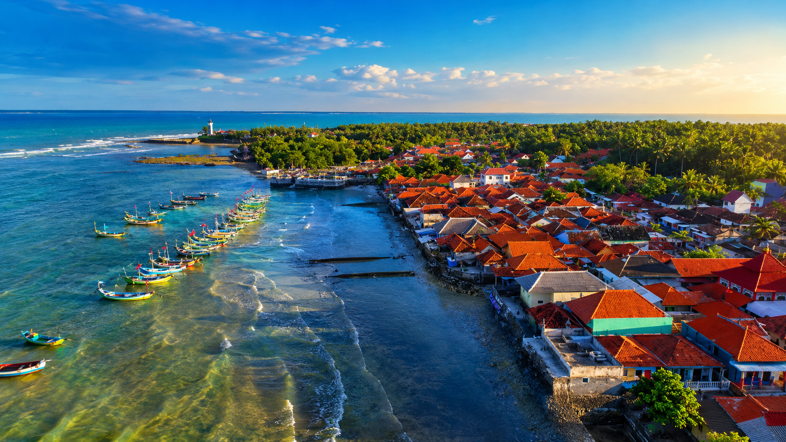

Mengenal profil, potensi, dan tujuan pengembangan informasi Desa Tanjung.

Desa Tanjung merupakan desa pesisir yang berada di Kecamatan Saronggi, Kabupaten Sumenep, Jawa Timur. Masyarakat desa memiliki hubungan erat dengan laut melalui aktivitas perikanan, wisata, dan usaha lokal.
Website Potensi Desa Tanjung dibuat sebagai media informasi dan promosi untuk memperkenalkan potensi wisata, UMKM, budaya, serta kekayaan alam desa kepada masyarakat luas.